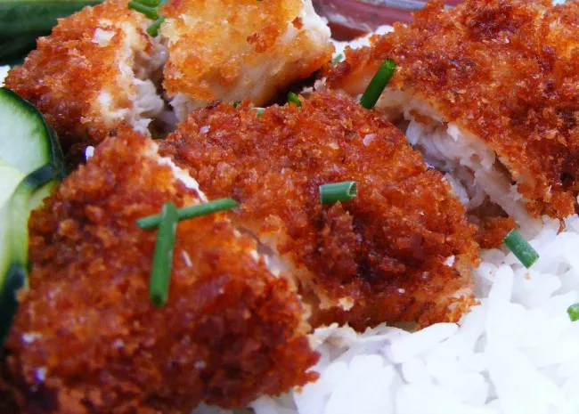

Chicken Katsu
Back to Homepage

Description
A crispy Japanese fried chicken cutlet coated with Panko.
Image and recipe comes from
this Allrecipes recipe..
Ingredients
-
4 Skinless, boneless chicken breast halved, pounded to 1/2 inch
thickness
- Salt and pepper to taste
- 2 Tbsp ap flour
- 1 Egg, beaten
- 1 Cup panko bread crumbs
- 1 Cup oil for frying, or as needed
Steps
- Season chicken breasts on both sides with salt and pepper.
-
Place flour, beaten egg, and panko crumbs into separate shallow dishes.
- Coat chicken breasts in flour, shaking off excess.
-
Dip coated chicken breast into egg, and press into panko crumbs until
well coated on both sides.
-
Heat oil in a large skillet over medium-high heat. Place chicken into
hot oil, frying until golden brown, roughly 3-4 minutes per side.
- Transfer pieces onto a paper towel lined plate to drain oil.
- Enjoy the chicken katsu!